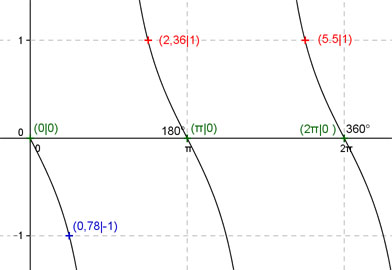
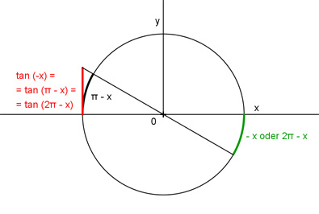

Aufgabe 136 Ergänzen Sie die Wertetabelle für x zwischen 0 und 2π. y = tan (-x) x 0,78 2,36 oder 5,5 y -1 1 Periode = π Berechnung der Nullstellen: tan -x = 0 ---> Wegen tan -x = -tan x --> x1 = 0 oder 0° x2 = π oder 180° x3 = 2π oder 360°  Funktionswert an einer Stelle x ermitteln: 0,78 * 180° x = 0,78 oder ------------- = 44,7° π f(0,78) = tan (-0,78) = tan (-44,7°) = -1 gerundet. Berechnung der x-Werte für y = f(x) = 1: f(x) = 1 eingesetzt, existiert einmal zwischen 0 und π bzw. 0° und 180° und zwischen π und 2π bzw. 180° und 360° (siehe Graph). tan -x = 1 --> 0,785 * 180° -x = arc tan 1 = 0,785 oder -------------- = 45° |*(-1) --> π x = -0,785 oder -45°, liegt nicht zwischen 0 und 2π. --> Mit tan (-π/4) = tan(π -π/4) = tan(2π - π/4) folgt x1 = 2,36 oder 135° x2 = 5,5 oder 315° gerundet. (siehe Einheitskreis) Einheitskreis, Radius = 1: 